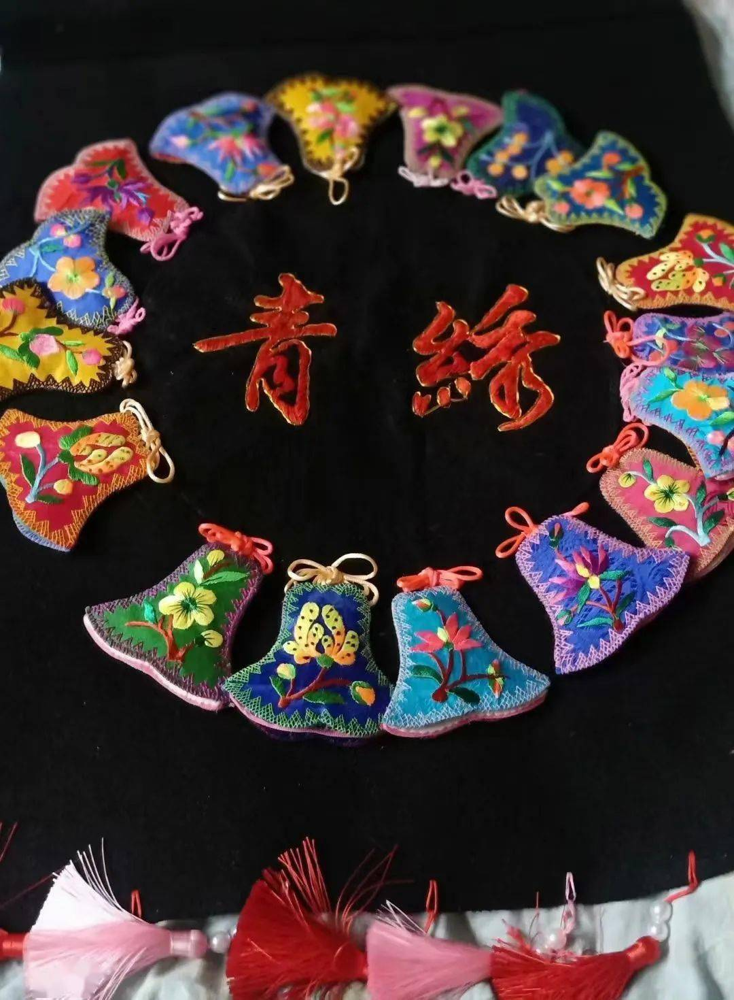

传承保护
5月31日，由中国国际商会、WBA中方理事会、德勤中国联合举办的金砖国家女性创新大赛新一届获奖名单正式公布。来自阿里公益重点帮扶地区、海东市平安区的青绣绣娘一-苏晓莉荣获大赛“木兰奖”，成为获得该奖的三个中国代表之一。

苏晓莉小时候家里贫困，正是因为这个原因，她也一直在寻找改变生活的机会。 青绣 1999年，苏晓莉做起了服装生意，逐渐有了规模。
2012年的一天，苏晓莉到西宁办事，看见游客围着小店购买藏族手工艺品，心中便萌生了一个想法:土族盘绣花样独特，工艺精湛，但当地妇女绣花多是用来打发时间，绣品也多是自己和家人使用，从来不知道拿去卖掉换钱，为啥要守着好手艺“吃穷饭”呢?。
于是，苏晓莉到互助土族自治县的东沟
丹麻、五十等乡镇，对盘绣的状况进行调
研。3个月的时间里，她走访了100多个村
子的几千家农户，找到了几位会盘绣的妇
女，带着她们一起做盘绣赚钱。
2015年，苏晓莉成立了刺绣公司，确定了
公司发展思路: 以独特的族盘绣为切入
点，研发新产品，在刺绣中呈现传统文化元素和现代元素，做